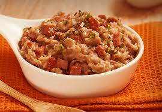
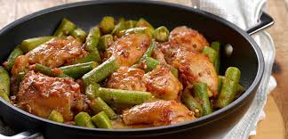
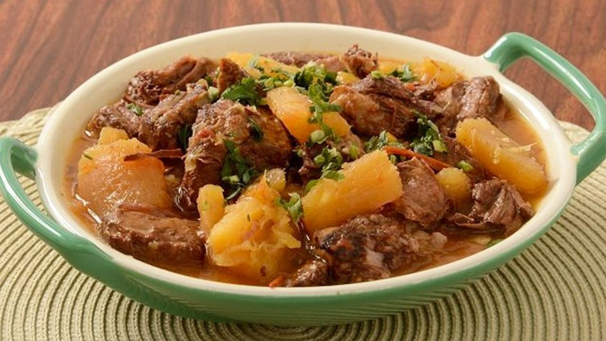
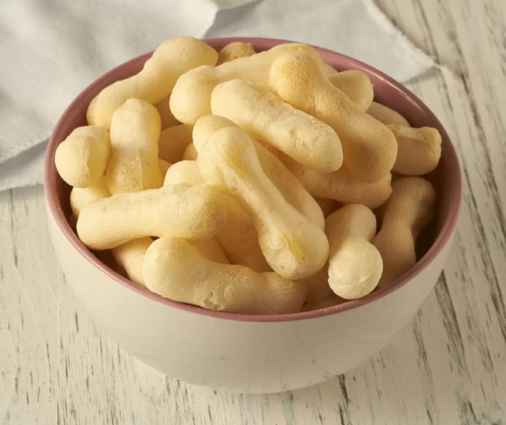
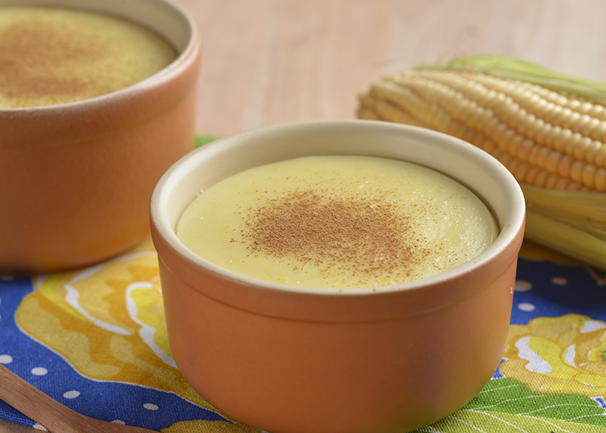
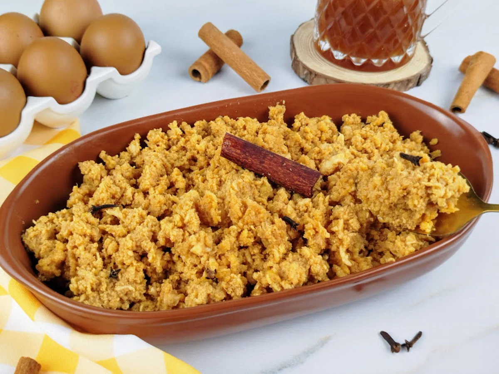

Feijão Tropeiro

Feito com feijão, farinha de mandioca, bacon, linguiça, ovos e alho. É uma comida rústica e saborosa, servida geralmente com arroz e carne de sol.
Ingredientes
Este é o conteúdo que estava oculto e agora é exibido após o clique.
Tutu de Feijão
Feito com feijão cozido e amassado, misturado com farinha de mandioca ou de milho. É servido com arroz, linguiça e torresmo.
Frango com Quiabo
Frango cozido com quiabo, geralmente acompanhado de arroz e feijão. O sabor do prato é intenso e o quiabo dá uma textura única.
Vaca Atolada
Prato feito com costela de boi cozida com mandioca. A carne fica bem macia, desfiando facilmente, e a mandioca absorve o sabor da carne.
Canjiquinha com Carne de Sol

A canjiquinha é feita com milho quebrado, e é cozida junto com carne de sol desfiada. É um prato simples e muito saboroso, bem comum em festas típicas.
Cozido Mineiro

Um prato de carne de boi, frango, legumes como batata-doce, cenoura e abóbora, cozidos lentamente. Tem um sabor suave e é uma refeição bem nutritiva.
Petiscos
Pão de Queijo

Um dos pratos mais famosos de Minas, o pão de queijo é feito com polvilho, queijo minas e ovos. Crocante por fora e macio por dentro.
Biscoito de Polvilho
Um biscoito leve e crocante, feito com polvilho azedo e doce, tipicamente servido no café da manhã ou lanche da tarde.
Doces
Curau
Sobremesa feita com milho verde, leite, açúcar e canela. Fica cremoso e é uma ótima pedida para o inverno.
Ambrosia
A ambrosia, conhecida como a comida dos deuses na mitologia grega, ganha um sabor especial com esta receita. As especiarias e o limão complementam o doce, trazendo um toque aromático divino. Embora a versão tradicional portuguesa leve apenas ovos e açúcar, essa adaptação enriquece ainda mais o preparo.